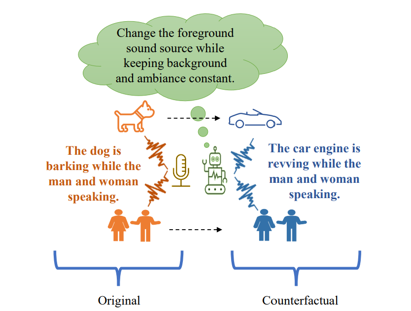

Counterfactual captions
Released JSON files keep the original human caption(s) and pair them with counterfactual rewrites for the same clip.
ICASSP 2024 paper companion
A polished release of counterfactual caption annotations for AudioCaps, Clotho, and MACS, designed to help audio-language models reason about alternative sound-source scenarios instead of learning from factual captions alone.

Not the audio clip itself. The released intervention happens in language, by rewriting sound sources and scene descriptions into plausible counterfactual alternatives.
What is in this repo
The repository packages the released annotation files, prompt scaffold, usage guidance, and a static project page. It is organized so someone can understand the method, obtain the original audio from the official sources, and wire these annotations into an existing audio-text pipeline quickly.
Released JSON files keep the original human caption(s) and pair them with counterfactual rewrites for the same clip.
Each row includes a relative path that can be joined with the official AudioCaps, Clotho, or MACS audio tree.
The released prompt template exposes the caption decomposition and rewrite strategy used to construct counterfactual text.
Everything in this website ships from the repository itself under
docs/, so the project page is ready to publish.
Method framing
Standard CLAP-style setup
The model learns which text matches the clip, but it is not explicitly told which nearby descriptions should be rejected for the exact same audio.
Counterfactual Audio setup
This adds structured linguistic negatives and lets the training objective preserve factual consistency while separating counterfactual alternatives in embedding space.
Release coverage
How to use it
path.This repository does not redistribute the original audio. It complements the official dataset releases and keeps the alignment simple: the relative path in each JSON row points back to the source clip.
Obtain AudioCaps, Clotho, and MACS audio from their official providers and keep the original folder structure when possible.
Each row already contains the factual captions, counterfactual captions, relative audio path, and metadata such as duration or samplerate.
Use the example loader to emit JSON Lines records with
audio_path, caption, and
counterfactual_caption.
python examples/resolve_audio_paths.py \
--release clotho-development-counterfactual.json \
--dataset-root /path/to/clotho \
--limit 3 \
--check-filesDemo-style browse
These examples are pulled from the repository’s JSON release and displayed as curated text-only cards. Filter by dataset or rotate to another set of pairs.
Prompt scaffold
Resources
Accepted at ICASSP 2024.
Use the official providers and dataset licenses.
@inproceedings{vosoughi2024counterfactualaudio,
title={Learning Audio Concepts from Counterfactual Natural Language},
author={Vosoughi, Ali and Bondi, Luca and Wu, Ho-Hsiang and Xu, Chenliang},
booktitle={ICASSP},
year={2024}
}